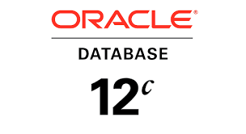

Pratik Thakare

I am an IT professional having 1.5 year of experience in manufaturing developement and support operations, mostly worked on Delmia apriso modules and helped my clients to acquire the digital transformation.Believe in the aglie way of working and follow it on daily basis.I am having sound knowledege in MES roles in Industry 4.0.
Skill Set



Education Details
Bachelor of engineering - Computer Science engineering - Batch: 2020
HSC- Computer Science - Batch: 2016
SSC- General - Batch: 2014
Contact Details
Mobile Number: 9767021707
Email: thakarep653@gmail.com
LinkedIn: https://www.linkedin.com/in/pratik-thakare-3baab5164/
Locate me below at
© developed with ♥ by Pratik in 2022